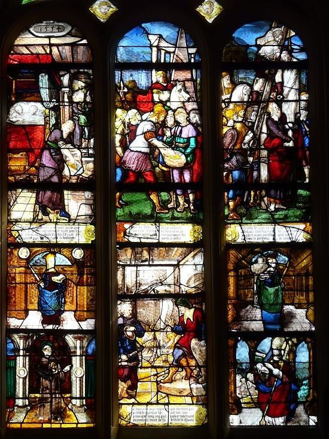
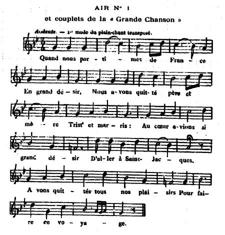
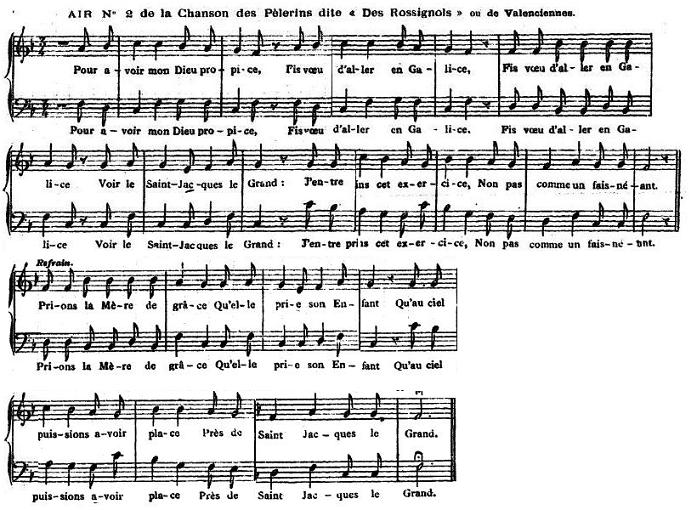
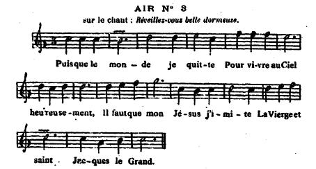
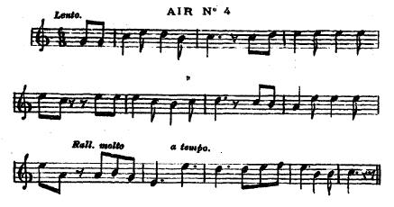
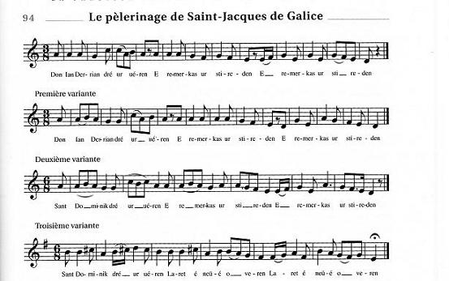

Chants du pèlerinage de Saint-Jacques
Songs of the Santiago Pilgrimage
|
El romero acusado de robo A San Jaume vuy anà à San Jaume de Galicia Amb lo gayato à la ma, y ls rosaria à la cinta. Quant ne son un poquet lluny, un poquet lluny de la vila Ya nencontran un hostal quhi havi auna fadrina. Diu la fadrina al romeu : « Dom un bes per cortesia !» «No ho mana la lley de Deu ni San Jaume de Galicia.» Nagafa una tassa dor dintre del sarrô li fica, Y quant eran al dinà la tassa dor no hi havîa. «Que ses fet la tassa dor Que l Senyô oncle bevîa? Diu la mossa del hostal que l fadrinet la tenîa. «Si yo tinch la tassa dor, penjat siui al mateix dia.» Li fican la ma al sarrô, la tassa dor hi tenîa. La justicia rigurosa ja lo penja al mateix dia, Perô son pare y sa mare no deixan de fé sa via: Quant ne son a la tornada al seu fill veure volîan. Diu la romera al romeu quel seu fill veure volîa. «Dona mia, ahont vols anà? Ahont vols anà dona mia?» De tan lluny com lo veuràs à plorà ten posarîas. De tan lluny com lo va veure ya plora com si morîa: San Jaume lo té pels peus, pel cap la Verge Maria, Los angelets pel entorn que li feyan companyia: «Ay mare, la meva mare, una cose os en dirîa: Quen anésseu à cal Batlle a cal Batlle de la vila, Y allo al trobareu dinant amb un gall y una gallina. Quant arrivareu alli li direu amb cortesîa: « Deu la guart, lo senyor Batlle amb tota sa companyia, Vaji à despenjà l meu fill que ya nes tornat à vida.» «Fugiu daqui, dona loca, no digau tal loquerîa, Que tant es viu vostre fill com aquet gall y gallina!» Lo gall se posa à cantà la gallina al plat ponîa. Aixô es miracle de Deu y lhumil Verge Maria, Ya n despenjan al farî, ya n penjan à la fadrina, Primé la van assotà, ells molt mes mereixia. (N°31 P.36 du « Romancerillo » de Vila) |
 Le miracle du pendu de Saint Jacques: église de Triel (1554) |
Le roumier (pèlerin) accusé de vol A Saint Jacques allaient bon train A Saint Jacques de Compostelle Avec le bourdon à la main, Et le rosaire à l'escarcelle. Alors qu'ils ne se trouvaient plus, Plus très éloignés de la ville, A lauberge ils sont descendus Où servait une jeune fille. Laquelle dit à leur garçon: "Viens donc membrasser, cest lusage!" "Est-ce là la loi de Dieu? Non! Ni de Saint-Jacques, je présage." Elle prit une coupe d'or La mit au fond de sa besace, Lheure du dîner vient alors. La coupe nest plus à sa place! "Ma coupe dor n'est plus là!" Dit l'oncle, à qui voulait l'entendre. La fille dauberge assura Quelle a vu le garçon la prendre. «Si jai cette coupe dor, moi, Dès midi, pendu je veux être. " On plongea la main dans son sac Et lon vit la coupe paraître. Sévère comme est la justice, On pend à midi l'homme sage. Mais ses parents vers la Galice Ont poursuivi leur long voyage: Rentrant par le même chemin Ils ont voulu qu'on le dépende. La pèlerine au pèlerin Dit: "C'est mon fils. Qu'on me le rende!" «Ma femme, à qui donc sadresser? Où veux-tu donc aller, ma femme? Daussi loin qu'elle peut le voir Elle verse d'amères larmes. Daussi loin quelle peut le voir Le croyant mort, elle sanglote: Or Jacques lui soutient les pieds Et Marie sa tête conforte. Et les anges tout autour d'eux Lui tiennent aussi compagnie: "Prêtez-donc l'oreille à ce que Je vous dis, ma mère chérie: Allez-donc trouver le Bailli De la ville. Loin de la foule, Vous le trouverez à dîner D'un coq rôti et d'une poule. Quand chez lui vous arriverez, veuillez bien poliment lui dire: «Dieu vous garde, seigneur Bailli Le représentant de l'empire, Allez-donc dépendre mon fils Car il a recouvré la vie. " "Pauvre folle, partez dici, Ne jouez point de telles soties, Votre fils est aussi vivant Que ce coq et cette poulette!" Le coq fit entendre son chant; La poule pondit dans lassiette. Cétait là miracle de Dieu Et de l'humble Vierge Marie. "Quon le dépende, je le veux Et que la fille soit pendue Mais quon la fouette auparavant, Cette punition est bien due!" Poème catalan tiré du "Romancerillo..." de Vila. Traduit par Christian Souchon (c) 2013 |
Origines du pèlerinage et de ses chantsC'est à partir de 951, que le tombeau de Saint Jacques de Compostelle commence à attirer les étrangers. Le plus ancien pèlerin français connu est l'évêque du Puy, Gotescalc, qui fit le voyage cette année-là. Au début du XIIème siècle les pèlerins était si nombreux que fut rédigé à leur usage vers 1140, vraisemblablement par les moines de Cluny solidement implantés en Espagne, le "Livre de saint Jacques", un guide du voyageur qui relatait, en se basant sur la chronique de l'archevêque Turpin, la translation des reliques de l'apôtre de Jérusalem en Galice et la découverte de son tombeau dans la forêt d'Iria-Flavia par l'évêque compostellan Théodomir en 812. Le premier miracle accompli par l'apôtre, fils de Zébédée, était d'avoir averti en songe Charlemagne d'avoir à suivre le chemin d'étoiles que constitue la Voie lactée pour délivrer son tombeau de Galice, alors entre les mains des Maures. La voie lactée changea son nom mythologique pour celui de "champ de l'étoile" (campus stellae), Compostelle et l'apôtre se vit attribuer l'épithète de "matamore" (tueur de Sarrasins).Un ouvrage de 1747 estime à 30.000 le nombre de pèlerins français qui se rendent chaque année à Compostelle ou Montserrat. Cela montre la popularité de ces pèlerinages qui servirent bientôt de prétexte à des désertions domestiques et des vagabondages de toutes sortes. Le nombre de ces faux pèlerins ou "coquillards" allait croissant, si bien que des ordonnances royales (1671 et 1686, renouvelées en 1717 et 1738) défendirent, sous peine de galères pour les hommes, les pèlerinages sans l'autorisation du roi et de l'évêque du diocèse. Mais c'est la révolution de 1789 qui mit réellement un terme à ces pérégrinations massives. Sur la route du tombeau de Saint Jacques, les pèlerins célébraient ses miracles par des hymnes et cantiques. Ces chants "Jacobites", d'abord transmis oralement, furent ensuite consignés par écrit. Le plus populaire de ces chants était une cantilène en latin tirée du Codex de Compostelle attribué à Aimery Picaud (XIIIème siècle). Le refrain était "Fiat, amen! Alléluia/ Dicamus solemniter/ E ultreia, e sus eia/ Decantemus iugiter!" (Allons, amen; disons solennellement 'alléluia!'. En avant, toujours en avant, sans cesser de chanter!). Au XVIème siècle, les chansonniers assurent le relais: une chanson catalane est citée par Mila dans sa "Poesia popular" (p. 106) avec des adaptations française et italienne. Des adaptations hollandaise et anglaise notées par Child dans ses "English Ballads" (I p. 106 et VI p.502) et Gaidoz dans un article de "Mélusine" ("Le coq cuit qui chante") attestent du succès de cette forme populaire. uvres de pèlerins inconnus ou de poètes populaires, ces chants ne sont pas des chefs-d'uvres littéraires, mais ils fournissent aux pèlerins des données précieuses sur la topographie des contrées à traverser, les provisions à faire ou les objets à emporter avec soi, les hospices où chercher asile, les dangers à éviter, les sanctuaires où sont conservées les reliques dont la visite est obligatoire, la ville et la cathédrale de Compostelle, les impressions personnelles formulées par les auteurs de ces textes... Souvent les couplets constituent des itinéraires où ces renseignements sont donnés pour chaque localité. C'est à partir du XVIIème siècle qu'on commence à réunir ces pièces en recueils de facture grossière que l'on écoulait par le canal des confréries de Saint-Jacques ou celui des colporteurs. Il ne reste malheureusement que quelques exemplaires de ces petits livrets, dont ceux imprimés à Troyes en 1718 et à Toulouse en 1736 et 1750. Tous ces chants, sauf la "Grande Chanson", sont des airs connus qui accompagnaient parfois des chansons fort lestes. C'est ainsi que dans le recueil "La pieuse alouette avec son tirelire", un pieux cantique commence par "J'aimerai toujours mon Jésus..." Il se chante sur l'air de "J'aimerai toujours le bon vin". Les textes ci-après proviennent de la réédition par Alexis Socard, dans ses "Noëls et Cantiques imprimés à Troyes depuis le XVIIème siècle jusqu'à nos jours" d'un manuel de 48 pages intitulé "Les chansons des pèlerins de Saint-Jacques" et daté du 7 août 1718. Les airs signalés en tête de ces pièces sont souvent tombés dans l'oubli. Les collaborateurs de l'Abbé Camille Daux de Montauban, le chanoine Morelot de Dijon, le chanoine Jaspar de Lille, l'abbé Dubarat de Pau, M. Camille Gardelle, le père bénédictin Antoine Dubourg de Paris et M. P. Dospital de Bétharram ont pu en retrouver quelques uns. |
Origins of the pilgrimageFrom 951 onwards Saint James' grave in Compostella attracted foreigners. The oldest prominent French pilgrim was Bishop Gotescalc of Le Puy who went then on pilgrimage there. Early in the 12th century pilgrims were so many that, around 1140, very likely the monks of Cluny Abbey who were firmly stationed in Spain, composed for them, the "Book of Saint James", a guide for travellers recounting, based on the chronicle by Archbishop Turpin, the transfer of the Apostle's remains from Jerusalem to Galicia and the discovery of his grave in the wood of Iria-Flavia by the Compostella bishop Theodomir, in 812. The first miracle wrought by the son of Zebedee was that he sent a vision to Charlemagne asking him to come to Galicia by following the Milky Way and reconquer his grave from the hands of the Saracens. The Milky way changed its name for "Campus stellae" (field of the star), Compostella and the Apostle earned the nickname "Matamoras" (killer of Moors).A 1747 book gave an estimate of 30,000 for the number of French pilgrims travelling yearly to Compostella or Montserrat. This demonstrates hat people had developed a real passion for those pilgrimages that soon were used as an excuse by those who deserted their homes, or as pretence by all sorts of vagabonds and tramps, called "coquillards". Therefore royal edicts were passed (in 1671 and 1686, reiterated in 1717 and 1738) to forbid pilgrimages performed without permission of King and Bishop of the see. But it was the 1789 revolution that really caused a first pause in these mass peregrinations. On their way to the grave of Saint James, the pilgrims used to extol his miracles in hymns and chorales. These "Jacobite" songs were first passed on orally, then committed to writing. The most popular of these songs was a Latin cantilena out of the handwritten Codex Compostellae ascribed to Aimery Picaud (12th century). The chorus was "Fiat, amen! Alleluia/ Dicamus solemniter/ E ultreia, e sus eia/ Decantemus iugiter!" ("Onward! Amen! Let us proclaim 'Alleluia'. Onward, onward, Don't stop singing!" In the 16th century, chansonniers (collections of ditties) take up the torch: a Catalan song is quoted by Mila in his "Poesia popular" (p. 106) along with French and Italian adaptations of the same piece. Dutch and English adaptations noted by Child in his "English Ballads" (I p. 106 and VI p.502) and Gaidoz in a contribution to "Mélusine" ("The crowing cooked rooster") attest to the popularity of those songs. Those songs, composed by unknown pilgrims and village poets, are by far no masterworks of literature, but they provide the travellers with precious particulars of the countries they cover: place names, commodities they should carry along with them, dangers they should avoid, the sanctuaries where are kept relics which must be honoured by a visit, the city and the cathedral of Compostella, impressions of the journey imparted by the authors of these texts... They often map out a route giving for each place on it precious information. As from the 17th century these pieces are compiled to unrefined printed collections sold by hawkers or via the Saint James brotherhoods. Unfortunately only a small amount of those coarse leaflets were preserved: among them, a few were printed in Troyes in 1718 and in Toulouse in 1736 and 1750. All these songs, except the "Great song", are well-known ditties that sometimes were sung to risqué lyrics. For instance in the collection "The pious skylark's trill", a nonetheless pious hymns begins with "I always will love Jesus" and is directed as to be sung to the tune of "I always will love good wine". The texts below are taken from a new edition by Alexis Socard, in his "Christmas Carols printed in Troyes from the 17th century to the present day", of a 48 page manual titled "The Songs of the Saint-James pilgrims" and dated 7th August 1718. Most of the airs quoted under the titles of these pieces fell in oblivion. However the collector Abbé Camille Daux from Montauban, Canon Morelot from Dijon, Canon Jaspar from Lille, Abbé Dubarat from Pau, M. Camille Gardelle, the Benedictine father Antoine Dubourg from Paris and M. P. Dospital from Bétharram could dig out some of them. |
1° La Grande Chanson des Pèlerins de Saint Jacques
ou Cantique Spirituel
The Great Song of the Pilgrims of Saint James
|
Ce "Cantique Spirituel" est tiré du Recueil réimprimé à Troyes en 1718. Jean-Baptiste Letourmy (1774-1800), dessinateur à Orléans, édita deux types d'image de Saint Jacques dont l'une est consacrée à ce "grand cantique des voyages". Elle montre le saint tenant en main un bourdon et une gourde. En haut deux motifs représentent d'un côté le "miracle du pendu de Saint-Dominique-de-la-Chaussée" et de l'autre le "miracle du coq". (cf. Notre Dame du Folgoët). Un imprimeur d'Orléans tirait encore ces images à 2000 exemplaires en 1816 et 4000 exemplaires en 1820. L'air de la présente "Grande chanson de Saint Jacques" semble le seul à avoir été composé ad hoc. Il servit, sous le nom d'"Air des Pèlerins", de timbre à d'autres chants religieux et même profanes, comme le Couplet des prêtres réfractaires ou la Complainte des émigrés qui datent tous deux des pires années de la Terreur. Une des caractéristiques en est l'absence fa dièse (1er mode du plain-chant). Un autre air a été publié par le chanteur Lamazon: il sert aussi à chanter un Noël dit de d'Andichon. Cette "Grande Chanson" qui parle de la Saintonge, de Blaye et des Landes, décrit, au moins en partie, car il remplace Dax, Ostabat et Roncevaux par Bayonne, le trajet connu comme - la "route de Tours" (París, Orléans, Tours, Poitiers, Saintes, Blaye, Bordeaux et Dax). Il existait aussi: - la "route de Toulouse" (Arles, Saint-Gilles du Gard, Montpellier, Toulouse, Oloron et le col de Somport); - la "route du Puy" (Le Puy, Conques et Moissac); - la "route de Limoges" (Vézelay, Nevers, Limoges, Périgueux et Mont-de-Marsan) qui rejoignait celle de Tours à Ostabat- Saint-Jean-Pied-de-Port. Par cette localité passait également la route de Toulouse qui après avoir laissé derrière elle Somport passait par Jaca, Montréal et Eunate. Une variante de cette "Grande Chanson" inclut une strophe où sont citées, à partir de Bordeaux, des étapes de la route de Limoges (Les Agraux, Roquefort et Mont-de-Marsan). C'est cependant Bayonne qui suit Mont-de-Marsan dans cette liste. La "Chanson des Parisiens", propre aux pèlerins du nord de la France qui passent par Paris, suit la route de Tours (en citant, en outre, Lusignan, Saintes et Pons). La "Chanson nouvelle" fixe le début de la "route de Tours" à Senlis et c'est là qu'on trouve cité le plus grand nombre de localités (Chartres, Bonneval, Châteaudun, Château-Renaud, Tours, Sainte-Maure, Châtellerault, Poitiers...). La "Complainte des pèlerins d'Aurillac" part de cette dernière localité et cite Bordeaux à la cinquième strophe comme seconde étape du parcours. Les pèlerins quittaient ensuite la "route de Tours" car, à la sixième strophe, on les retrouve à Bayonne où "calg cambiar bona peconha/ pèr moneda molt ronha" (il faut changer de la bonne monnaie / contre une autre toute rouillée)! Pratiquement tous les chants d'itinéraires français font un détour par Santo Domingo de la Calzada qui jouissait d'une réputation inégalée en raison du double miracle de l'"ahorcado vivo" (pendu vivant) et des "aves resucitadas" (poulets ressuscités). |
This "Sacred Hymn" was taken from the Collection reprinted in Troyes in 1718. Jean-Baptiste Letourmy (1774-1800), a drawer living in Orleans, published pictures of Saint James of two types: one of them displayed beside this "Great Traveller's Hymn" a figure of the holy man holding in his hand the pilgrim's staff with the calabash. In the upper part, two designs showed on the one side the "miracle of the man hanged at Santiago de la Calzada", on the other side the "crowing cooked cock miracle" (cf. Notre Dame du Folgoët). An Orleans bookseller still printed 2000 copies of it in 1816 and 4000 copies in 1820. The tune of the present "Great Song of Saint James" seems to be the only air purposefully composed for specific lyrics. Known as "The Air of the Pilgrims" it was used as vehicle for all sorts of pieces of both sacred and mundane music, like The stanzas of the non-juring priests or the Lament of the Emigrés both dating from the most dreadful years of the "Terror". One of its characteristics is its avoiding the F sharp note (1st plainchant mode). Another air was published by the singer Lamazon, to which the so-called Christmas carol of Andichon is usually sung. The present "Great Song" which mentions Saintonge, Blaye and the Landes, describes, at least partly, since it replaces Dax, Ostabat and Roncevaux Pass with Bayonne, the route known as - the "Tours route" (París, Orléans, Tours, Poitiers, Saintes, Blaye, Bordeaux et Dax). There were other routes: - the "Toulouse route" (Arles, Saint-Gilles du Gard, Montpellier, Toulouse, Oloron and Somport Pass); - the "Le Puy" route (Le Puy, Conques and Moissac); - the "Limoges route" (Vézelay, Nevers, Limoges, Périgueux and Mont-de-Marsan) which joined the "Tours route" at Ostabat- Saint-Jean-Pied-de-Port. Through this town also passed the "Toulouse route" which, after leaving behind Somport went on via Jaca, Monréal and Eunate. A variant to this "Great Song" includes a stanza where are quoted, starting from Bordeaux, stages on the "Limoges route" (Les Agraux, Roquefort and Mont-de-Marsan). However, Bayonne comes after Mont-de-Marsan in this list. - The "Song of the Parisians", peculiar to the pilgrims from Northern France who were bound to pass through Paris, follows the "Tours route" (quoting, in addition, Lusignan, Saintes and Pons). - The "New Song" sets the starting point of the "Tours route" in Senlis and quotes the largest number of placenames (Chartres, Bonneval, Châteaudun, Château-Renaud, Tours, Sainte-Maure, Châtellerault, Poitiers...). - The "Lament of the Aurillac pilgrims" starts in the latter town and names, as the second stop on the route, Bordeaux at stanza 5. The pilgrims were then directed to leave the "Tours route" since, at the sixth stanza, we find them in Bayonne where "calg cambiar bona peconha/ pèr moneda molt ronha" (they are forced to change their sound money / against another full of rust)! Practically all French "route songs" make a detour via Santo Domingo de la Calzada which enjoyed an unmatched repute due to the double miracle of the "ahorcado vivo" (surviving hanged man) and of the "aves resucitadas" (resuscitated fowls). |
|
1. Quand nos partîmes de France En grand désir, Nous avons quitté père et mère Tristes et marris. Au cur avions si grand désir D'aller à Saint-Jacques. Avons quitté tous nos plaisirs Pour faire ce voyage. 2. Quand nous fûmes en la Saintonge, Hélas, mon Dieu: Nous ne trouvâmes point d'églises Pour prier Dieu: Le Huguenots les ont rompues Par leur malice. C'est en dépit de Jésus-Christ Et la Vierge Marie. Ce 2ème couplet montre que la révocation de l'Edit de Nantes en 1685 n'était en aucune façon une mesure impopulaire auprès de l'immense majorité catholique de la population. Autres étapes: 3 Blaye (traversée de la Gironde); 4 les Landes (couvertes à l'époque de roselières); 5 Bayonne (où il faut changer de monnaie, la langue qu'on y parle est le basque); 6 Sainte-Marie (Irun, adieu à la France); 7 Montagne Saint Adrien (Col de San Adrian); 8 Peuple (Pampelune) et Victoire (Vitoria, entre ces deux villes, s'étendent d'immenses champs de thym et lavande). Le miracle du coq est évoqué à la strophe 9, à propos de Santo Domingo de la Calzada, appelé ici "Saint Dominique": 9. Quand nous fûmes à Saint-Dominique Hélas mon Dieu Nous entrâmes dedans l'église Pour prier Dieu. Le miracle du pèlerin Par notre adresse; Avons ouï le coq chanter Dont nous fûmes bien aise. Puis viennent: 10 Borgue (Burgos, miracle du Crucifix qui sue); 11 Léon (les dames sortent pour voir les Français); 12 Saint-Marc (les routes bifurquent à la sortie de Léon: l'une va directement à Saint-Jacques, l'autre passe par Oviedo: on prend cette dernière); 13 Mont-Etuves ( Col de Pajares en remontant vers Oviedo, il y fait très froid en raison de l'altitude) et Saint Salvateur (Oviedo où sont exposées des reliques: une lettre est délivrée aux pèlerins); 14 Pont-qui-tremble (à Navia: ce terrible pont mentionné dans de nombreux chants franchit un étroit bras de mer entre deux montagnes); 15 Rivedieu en Galice (Ribadeo: nouveau changement de langue. On prend les pèlerins pour des vagabonds. Ils échappent aux galères en prétendant être des Espagnols et non des Français); 16 Montjoye (il s'agit du Mont del Gozo d'où l'on aperçoit déjà la cathédrale Saint-Jacques); et 17 Saint Jacques (dévotion dans la cathédrale: on prie le "glorieux martyr" d'accorder sa protection aux pèlerins sur le chemin du retour). |
 Mélodie 1 |
1. When we started in France Anxious to go on pilgrimage, We left behind father and mother Sad and sorry to do so. But we were so anxious To walk all the way to Saint James. We gave up all our pleasures To start on this travel. 2. When we were in Saintonge, How distressful it was, my God, Not to find any church To pray to God: The Huguenots dismantled them Out of malice. Despising Jesus-Christ And the Virgin Mary. This 2nd stanza clearly shows that the revocation of the Edict of Nantes in 1685 was by no means condemned by the French who were mostly Catholics. Further stages: 3 Blaye (crossing the Gironde by ferry); 4 the Landes (covered at the time with reed ponds); 5 Bayonne (where the pilgrim had to change money. The language spoken there back then was Basque); 6 Sainte-Marie (Irun, farewell to France); 7 Mount Saint Adrien (San Adrian pass); 8 People (Pamplona) and Victory (Vitoria, between those two cities large slopes covered with wild thyme and lavender). The Miracle of the crowing Cock is referred to at stanza 9, in connection with the town Santo Domingo de la Calzada, called here "Saint Dominic" (of the Causeway): 9. When we were in Saint-Dominic, Alas my God, We entered the church To pray to God That His miracle in favour of a pilgrim. He might reiterate for us: We heard a cock crowing And we were most pleased. Then come: 10 Borgue (Burgos, miracle of the sweating Crucifix); 11 Leon (where the ladies come out to see the French pilgrims); 12 Saint-Marc (a suburb of Leon where the street branches off: one branch straight to Santiago, the other via Oviedo: the pilgrim chooses the latter); 13 Mount-Etuves (Pajares Pass on the way up to Oviedo: a very cold place due to altitude) and San Salvador (another name for Oviedo where relics are exhibited: a voucher is delivered to worshippers); 14 The Wobbling Bridge (at Navia: this dreadful bridge is mentioned in several songs. It links two sheer cliffs over a narrow sound); 15 Rivedieu in Galicia (Ribadeo: a new language is heard. There the pilgrims are mistaken for vagabonds. They escape being sent to the galleys by pretending to be Spaniards, not French); 16 Montjoye (should refer to Mount del Gozo from where Saint James Cathedral may be seen in the distance); and 17 Saint James (worship in the Cathedral: the Pilgrims pray to the "glorious Martyr" he may grant them his protection on their way home). |
2° Chanson des Pèlerins de Valenciennes
dite "Chanson des Rossignols"
Song of the Valenciennes Pilgrims also known as
Song from the "Nightingales" Collection
|
Selon l'Abbé Camille Daux, historiographe du diocèse de Montauban, auteur des "Chansons de Pèlerins de Saint-Jacques" d'où sont extraits ces textes et ces mélodies (Montauban, 1899), cette chanson, tirée de l'opuscule imprimé a Valenciennes en 1616, serait la plus populaire des chansons de "roumieux" (pèlerins) et peut-être la plus ancienne. Il reproduit l'avis du chanoine Morelot qui lui a fourni cette pièce. Si un autre commentateur, M. Nicolaï réserve ces qualificatifs à la "Grande Chanson", c'est qu'il ne connaît pas le présent texte qui ne figure pas dans l'ouvrage d'Alexis Socard. L'opuscule en question s'appelle "les Rossignols spirituels". Une seconde édition porte le nom de l'auteur des accompagnements des mélodies ("les meilleurs accords, notamment le bas" est-il précisé après le titre du recueil), l'organiste Pierre Philippe(s) et la mention "regaillardi au primevère de l'an 1621" (révisé au printemps 1621). Il n'est sans doute pas l'auteur de la mélodie elle-même que l'on donne parfois comme timbre à une chanson qui commence comme la précédente et que divers recueils appellent: "Ma calebasse est ma compagne" (la calebasse servant de gourde ornait le bourdon du pèlerin. Il ne s'agit pas, d'un air à boire, comme semble le croire l'Abbé Daux). La chanson en question est à l'évidence un plagiat de la présente: "Quand nous partîmes de France/ Nous dîmes adieu à nos femmes/ Et à nos petits enfants./ A Dieu je les recommande/ Et à Saint Jacques le Grand. REFRAIN: Prions la Vierge Marie/ Et son cher enfant/ Qu'il nous fasse la grâce/ De voir Saint Jacques le Grand." |
In the view of Abbé Camille Daux, historiographer of the diocese Montauban, the author of the collection "Songs of Saint James' pilgrimage" (Montauban, 1899) from which these lyrics and melodies are taken, the song at hand which he found in a pamphlet printed in Valenciennes in 1616, could be the most popular of the "roumieux" (pilgrim) songs and possibly the oldest, too. This also was Canon Morelot's opinion who provided him with this piece. Another scholar, M. Nicolaï, applies these attributes to the "Great song", That he did not know the present text which is missing in Alexis Socard's book (the reference book in the matter at hand) may account for it. The said pamphlet was titled "Nightingales of sacred music". A second edition of it mentions the name of the musician who arranged the melodies ("who provided the best chords, in particular the bass line" as stated in the undertitle), to wit, the organ player Pierre Philippe(s) who "revisited it in the spring of the year 1621". The odds are that he was not the composer of the melody which is sometimes referred to as "My calabash is my companion" (the gourde hanging from the pilgrim's staff is meant; this is no bacchalian song as erroneously assumed by Abbé Daux!). It is evident that the song in question is an imitation of the foregoing: "When we started in France/ We kissed goodbye our wives/ And our little children/ And commended them to God/ And to Saint James the Great. CHORUS Let us pray to the Virgin Mary/ And her dear Son/ May they grant us the grace/ Of seeing Saint James the Great". |
|
1. Pour avoir mon Dieu propice, Fis vu d'aller en Galice (bis) Voir le Saint Jacques le Grand: J'entreprins cet exercice, Non pas comme un fainéant. REFRAIN Prions la Mère de grâce Qu'elle prie son Enfant Qu'au ciel puissions avoir place Près de Saint Jacques le Grand. 2. Devant me mettre en voyage, Je fis comme un homme sage: (bis) M'estant deument confessé, Je receus pour témoignage Un escrit de mon curé. Les autres strophes décrivent le déroulement du pèlerinage: 3 Le pèlerin se recommande à son ange, à Notre Dame et à Saint Jacques ainsi qu'à son saint patron, son "garant". 4. Il se munit d'une image à titre de passeport, d'un bourdon et d'un chapelet. 5. (Parti de Valenciennes?) le deuxième jour au matin il est à Paris, un jour chômé, et y entend la messe. 6. Les pèlerins repartent le lendemain matin après la prière. 7. Sur le trajet ils passent la nuit à l'abri d'un arbre, même quand il pleut. 8. Ils acceptent qu'on leur fasse l'aumône. 9. Ils récitent en chemin des litanies, chantent des chansons et se racontent mutuellement leurs aventures. 10. La bonne entente règne entre les pèlerins. 11. Le passage à la "fameuse ville Monsieur Saint Jacques le Grand" leur donne des forces nouvelles (Santo Domingo de la Calzada). 12. Au "Pont qui tremble" (à Navia), les trente Wallons et "Allemands" (Flamands) se cèdent mutuellement le passage! 13. Arrivés à Compostelle, ils se précipitent dans la cathédrale. 14. Après quelques journées passées à Compostelle, les uns rentrent chez eux, les autres poursuivent le pèlerinage (vers Montserrat, par exemple). 15. Ce pèlerinage était placé sous le signe du courage et de la satisfaction d'avoir servi la cause de la Foi. |
 Mélodie |
1. To make God propitious to me, I made the vow to go to Galicia (twice) And visit Saint James the Great: I did not pursuit this exertion As a lazy pastime. REFRAIN Let us pray to Our Mother of Grace That she may intercede with her godly Child And secure us a place in Heaven Near Saint James the Great! 2. On the point of leaving, I did as all wise men do: (twice) I duly went to confession, And received a certificate Written by my vicar. The other stanzas record the progress of the pilgrimage: 3 The pilgrim commends himself, to Our Lady and Saint James, as well as his patron saint, who shall be his "guarantor". 4. He supplies himself with an image that he will use as a passport, a staff with gourde and a rosary. 5. (Starting from Valenciennes?), he arrives in Paris early on the second day. As it is on a holiday, he will hear mass there. 6. The pilgrims start off again, the next morning, after prayer. 7. On their way, they sleep overnight underneath a tree, in spite of the rain. 8. They allow people to give them alms. 9. On their way, they recite litanies, sing songs and recount each other's adventures. 10. The pilgrims live in harmony with each other. 11. The stop at the "famous city of Sir Saint James the Great" invigorates them afresh (Santo Domingo de la Calzada, where the "hanged man miracle" took place). 12. To step onto the "Wobbling Bridge" (at Navia), the thirty Walloons and "Germans" (Flemish) in the party give cautiously precedence to each others! 13. As soon as they arrive in Compostella, they make a rush for the cathedral. 14. After a few days spent in Compostella, part of them return home; the others continue on their pilgrimage (towards Montserrat, for instance). 15. This pilgrimage was placed under the sign of courage and all participants are satisfied to have served the cause of Faith. |
3° Sur un gentilhomme qui a fait le voyage de Saint-Jacques
et qui s'est rendu capucin
On a Gentleman who went on a pilgrimage to Santiago
and was made a Capuchin monk
| Contrairement à la plupart des chants de pèlerin qui sont d'intérêt général, celui-ci s'attache à un cas isolé. Il est porté par une mélodie on ne peut plus profane "Réveillez-vous belle dormeuse". Il est tiré d'un recueil de 1718. Cet air est parfois attribué à Lulli, mais le recueil, "La clé du caveau à l'usage de tous les chansonniers français des amateurs, acteurs du Vaudeville et de tous les airs de la chanson"" (N° 511) publié par Pierre Capelle en 1811 chez Weissenbeck à Bruxelles l'attribue à Dufresny. | Unlike most pilgrim songs, that have general import, the present piece records a peculiar case. The tune is a thoroughly profane air: "Wake up, sweet sleeping girl!", drawn from a 1718 collection. It is sometimes ascribed to Lulli, but the famous compendium "The Key to the Cellar, published for the benefit of all French chansonniers, connoisseurs and performers of vaudeville and other ditties and airs", in 1811, by Pierre Capelle (at the Weissenbeck Library in Brussels), attributes it, under number 511, to Dufresny. |
|
1° Puisque le monde je quitte Pour vivre au Ciel heureusement, Il faut que mon Jésus j'imite La Vierge et saint Jacques le Grand. REFRAIN Vive Jésus, vive Marie, Prions le Sauveur maintenant, Qu'il nous fasse à tous la grâce D'aller à Saint-Jacques le Grand. Dans ce texte le "monde" s'entend des "mondanités" comme il est précisé tout au long des 13 strophes qui composent le chant: adieu aux armes, aux parents et amis, à la danse et aux fêtes, aux fards et aux parfums, aux domestiques, aux fastes de la cour. Je donne même toutes mes richesses aux pauvres! La dernière strophe conclut: 13. On est dans ce pieux voyage Délivré de tout accident Et c'est par ce pèlerinage Qu'on peut aller au Firmament. |
 Mélodie |
1° Since I must give up this vain world To partake in sweet Heaven's bliss, As models I must take Jesus The Virgin and Saint James the Great. CHORUS Hail Jesus! Hail Mary! Let's pray to Our Saviour now, That He may grant us the grace To greet Saint James in his shrine. In these lyrics the "world" means "mundane existence", as stated all along the 13 stanzas which the song encompasses: farewell to arms, to kith and kin, to dance and merriments, to rouge and perfumes, to large staff of servants, to the splendours of the court. I shall even give all my riches to the poor! The last stanza concludes: 13. All along this pious voyage You feel safe against accidents And thanks to this blessed pilgrimage You're due to reach the Firmament. |
4° Chants de pèlerins bigourdan, béarnais et basque
Pilgrimage songs from Béarn and the Basque Country
|
Dans le "Codex Compostellanus", manuscrit du XIIIème siècle, il apparaît qu'à cette époque déjà leschants liturgiques latins étaient complétés de strophes dans les langues "vulgaires" propres à chaque pays. L'hymne "Ad honorem Regis summi" d'Aymery Picaud était agrémenté d'un tel ajout précédant le refrain "Fiat, amen, alleluïa". C'est ainsi que les Flamands disaient "Herru Santiagu!/ Grut Santiagu!" (Seigneur Saint Jacques, Grand Saint Jacques!). Puis apparurent les chants complets en langues diverses, tels que le chant catalan cité en exergue. En ce qui concerne les langues locales parlées en France, très peu de ces chants se sont conservés. Tout au plus en connaît-on les airs dont on se souvenait, à la fin du XIXème siècle qu'ils se chantaient en gascon de Bigorre. C'est le cas du premier air noté ci-après par M. Dufouret. Le second chant est celui des Pèlerins de Bétharram, le "Bey aniram" dans la transcription, du Père Dospital. La traduction montre qu'il ne s'agit pas du chant "Sentjacquaire" proprement dit. Le chant basque, quant à lui, a été recueilli par M. Ch. Bordes dans son "Chant populaire à l'église et dans les confréries et patronages", publié par la Schola Cantorum en 1897. Sous le titre "Kantika espiritualak", il donne 10 cantiques anciens en souletin. Celui-ci s'intitule "Herioaz I". Comme le précédent, c'est un air modal dans le 8ème ton grégorien. Ce n'est pas un chant de Saint Jacques, mais un chant sur la vanité du monde. Cependant la ressemblance de la mélodie avec celle de la "Grande Chanson" est indéniable. |
From the "Codex Compostellanus", a 13th century manuscript, we may infer that the Latin liturgical songs of the time were already interspersed with stanzas in vernacular languages. The anthem "Ad honorem Regis summi" by Aymery Picaud was also adorned with an addition preceding the burden "Fiat, amen, alleluia". Thus the Flemish used to say "Herru Santiagu!/ Grut Santiagu!" (Lord Saint James, Great Saint James!). Then whole songs in diverse languages appeared, like the Catalan song quoted as an epigraph. Concerning the local languages spoken in France, very few pilgrim songs were preserved. At best we know the tunes of songs in Bigorre dialect (a Pyrenean valley) which were still remembered by the end of the 19th century. Such was the fiest song below gathered by M. Dufouret. The second hymn was sung by the Pilgrims on their way to the local place of worship, the Bétharram cave. "Bey aniram" was transcribed by Father Dospital. We see from the translation that this is no "Saint James' song" in the narrow meaning of the phrase. As for the Basque song, it was collected by M. Ch. Bordes for his "Folk songs at church and in patron saint brotherhoods", published by the (Parisian academy) Schola Cantorum in 1897. Under the heading "Kantika espiritualak", he discusses ten Soule dialect hymns. The present one is titled "Herioaz I". Like the foregoing it is no Saint James hymn but a lament on the vanities of this lesser word. However the likeness of its melody with that of the "Great Song" is indisputable. |
|
CHANT BEARNAIS Béy aniram, Béy aniram Déboutamon ta Bétharram U co doulen qu'ey pourtaram: A Diù lou Pay Qué l'ouffriram. CHANT BASQUE 1. Gizona noun duk zuhurtzia? Zer! eztakik Eztela deus ere bizia Khebat baizik! Hugunt erak mundu erhoa Orai danik; Ah! eztuk hurrun herioa Hire ganik. 2. Munduko plazer erhoetan Habilana, Jinko Jaona hire gogoan Eztiana, Ohart emak hil behardela Eta bertan Oren bat segurki eztela Mundu hontan. 3. Aberatsa, hi diharriak Hai utsutzen, Mundu hountak' utchur' izunak Enganatzen, Laster hire plazer maitiak Tuk galduren, Jinkoari hire khountiak Tuk emanen. 4. Gaztiak, eztuk zeren ari Khorpitz horren Manier jarraikitzen bethi, Bai edertzen. Herioa gaztetarzunaz Duk trufatzen, Gazteriari jatzartziaz Duk gozatzen. 5. Tratulant izabaz gosia, Deusek ere Mundu hountan ezin asia Behinere, Sarri hozia duk ukhenen Ostatzutzat, Diharu guziak eitziren Besterentzat. 6. Laboraria, aoherretan Hiz nekatzen: Herioa houste gabian Zaik hullantzen; Ereitzetan egiteko lanak Tuk hiretzat, Eta haien frutu ederrak Primientzat. 7. Bat etzaio herioari Ezkapiren, Zorrozki zaio bakhoitzari Jarraikiren: Bilhaturen tu erregiak Alkhietan, Hala noula jente chehiak Etcholetan." |
 Mélodie |
CHANT BEARNAIS Nous irons, nous irons Dévotement à Bétharram Un cur dolent nous y porterons: A Dieu le Père Nous l'offrirons. CHANT BASQUE 1. Homme, où réside ta sagesse? Ne sais tu pas Qu'elle est bien vaine l'existence Face au trépas? Déteste les folies du monde Dès à présent, Car la mort n'est pas loin qui gronde A tout moment. 2. Aux plaisirs d'un monde futile Tu te complais. Le Seigneur d'un cur indocile Tu l'as chassé. Souviens-toi que la mort menace Plus que jamais: Du tombeau chaque heure qui passe T'a rapproché. 3. Riche, que les vaines richesses Ont aveuglé, D'ici-bas les grâces traitresses T'ont bien grugé; Ces plaisirs dont tu jouis sans honte Tu les perdras. Tu devras à Dieu rendre compte, N'en doute pas. 4. Jeune homme, tu te plais à suivre De ce beau corps Les ordres bien vains qu'il délivre; Le pares d'or; La mort, vois-tu, de la jeunesse Se moque bien. Quand elle la ronge, il n'en reste Jamais plus rien. 5. Négociant que le gain obsède, Sache le bien, C'est toi-même qu'elle possède, Ta grande faim. Bientôt ta dernière demeure, C'est le tombeau. A d'autres iront tout à l'heure, Tes oripeaux. 6. Et toi, laboureur, qui t'acharnes En vains efforts, Sans voir que rôde la camarde, La pâle mort; Toi qui de semer eus la peine Ce n'est pas toi, Mais ton fils qui le fruit des graines Récoltera. 7. Par la mort, ici-bas, personne N'est épargné; A chacun de nous la charogne Veut s'attacher; La mort précipite des trônes Les plus grands rois. En sa chaumière le pauvre homme Court au trépas. Traduction "chantable" de Christian Souchon (c) 2013 A partir de la traduction en prose de Ch. Bordes |
5° Chant breton
Le Pèlerinage de Saint-Jacques de Galice
|
Le chant vannetais qu'on va lire a été publié par l'Abbé François Cadic dans sa "Paroisse bretonne de Paris" de mai 1910. Il avait été recueilli à Melrand par les Abbés Guyot et Le Moing et M. Louis Lorcy. Cette mère défunte qui vient solliciter son fils, Saint Dominique, nouvellement ordonné, d'acquiter la dette sacrée contractée par elle et qui, à défaut de ce concours, serait condamnée à faire elle-même ce pèlerinage de Saint-Jacques de Galice, en ne parcourant chaque année que la longueur de son "aire" (cercueil), rappelle le Yannik Scolan du Barzhaz qui adresse à sa mère la même prière pour le salut de son âme. Ce chant illustre en outre une pratique répandue en Bretagne, celle du "pèlerinage par procuration", une des professions de l'informatrice de Luzel, Marguerite Philippe. La même trame se retrouve dans "Dom Jean Derrien", un chant recueilli par Luzel auprès de Marie-Anne Lenoan, vieille mendiante, commune de Duault, et publié dans ses "Gwerzioù Breizh Izel", tome 1, p. 120 en 1867. Le jeune prêtre Dom Jean Derrien, pour complaire à sa défunte mère, fait le pèlerinage de Saint-Jacques de Turquie. Il rencontre en chemin un Turc qui menace de le jeter à la mer s'il ne renie pas sa foi. Il est sauvé par l'intercession de Saint Jacques à qui il promet l'habituelle offrande du cordon de cire qui fait deux fois le tour de son église et de ses dépendances pour venir se nouer au crucifix. Le chanoine H.Pérennès a également publié, dans les Annales de Bretagne", volume 45-3/4 (1938) un "Don Ian Derrian" qui se chante sur la mélodie "Tre Langolen hag ar Faouet" du Barzhaz: "Dom Yann Derrian zo bet spontet/ Evit an nozioù tremenet/ Gant un anaon pe ur spered" "Don Jean Derrian fut épouvanté,/ Plusieurs nuits de suite/ Par un revenant ou un esprit" Il s'agit ici encore de la mère du jeune prêtre, au purgatoire depuis douze ans pour n'avoir pas accompli son vu, un voyage à Saint-Jacques de Turquie qu'elle charge son fils de faire à sa place. Enfin, le "Dom Iann Derrien" collecté par Kerambrun pour J.-M. de Penguern (T.91) nous éloigne encore plus du chemin de Saint-Jacques. La défunte mère confie à son fils la mission suivante: "Mont ur wech da di Aotroù Sant Yann/ ha da Sant Jervest (Jelvestr) Allemagn" Aller un fois au sanctuaire de Saint Jean et Saint Sylvestre d'Allemagne". On chercherait en vain ce sanctuaire sur une carte d'Allemagne. Le bateau de Dom Jean est pris, en pleine mer par des Maures (Moroet) et leur chef (ar Moro braz) exige du prêtre qu'il ôte son "bonnet carré" (sa barrette). Sur son refus le malheureux est jeté à l'eau. Demeuré sur un rocher, il fait des signes d'alarme avec un mouchoir. Un bateau qui passe le recueille. Il donne aux sauveteurs ce mouchoir pour qu'ils le remettent à sa sur en lui recommandant de ne pas le laver, car le sang du Seigneur s'y trouve... La sur dont la méchanceté s'était exprimée dans ses reproches à son frère lors de l'annonce de son coûteux voyage (alors que ses études de prêtre avait été une lourde charge pour sa famille), s'empresse de passer outre. Ce faisant, elle assèche le ruisseau. Cet épisode est évidemment emprunté à la Complainte de la Passion. (Un autre est une réminiscence du chant Les matelots). Au bout du compte, seule la version de l'Abbé Cadic, parle expressément de Saint-Jacques de Galice et évoque Saint Dominique. Mais on remarquera que lorsque le mot "Galis" (Galice) est à la rime, il est combiné avec les mots "bamdé, dé, hanni" qui rimeraient plutôt avec "Turki". Le chanteur n'aurait-il pas opéré une substitution, en même temps qu'il remplaçait "Dom Yann Derrien" par "Sant Dominik"? L'Abbé Cadic ne semble pas le croire. Il rappelle, au contraire, que "les émigrants qui de Grande-Bretagne, au Vème siècle, essaimèrent en Armorique fondèrent aussi des colonies en Galice... s'y implantèrent si fortement qu'au VIIème siècle...on parlait encore breton dans un concile à Saint-Jacques". Dans une note le chanoine H. Pérennès indique que, selon lui, Saint-Jacques de Turquie n'est autre que Saint-Jacques de Compostelle, du fait que l'apologétique ibérique avait fait de l'Apôtre un "Matamore", tueur de Maures, bien que la Galice n'ait jamais été envahie par les Maures (que les bardes bretons identifient parfois avec les Turcs). |
The below Vannes-dialect song was published by the
Rev. François Cadic in the May 1910 issue of his journal "Paroisse bretonne de Paris". It had been collected in Melrand by Rev. Guyot, Rev. Le Moing and M. Louis Lorcy. Saint Dominic's deceased mother entreats her son, soon after his ordination, to fulfil a vow she had made in her lifetime, since, lacking his help, she would be doomed to go on pilgrimage to Saint-James of Galicia, each year moving forward only by the length of her "floor" (coffin). This story reminds us of "Yannik Scolan" in the Barzhaz who, after his death, implores his mother in the same way for the sake of his salvation. Besides, the song echoes a once widespread practice in Brittany: going on "pilgrimage in someone else's stead", which was the main calling of Luzel's informant Marguerite Philippe. We find the same plot in "Dom Jean Derrien", a song Luzel learned from the singing of Marie-Anne Lenoan, an old beggar woman in Duault, and published in his "Gwerzioù Breizh Izel", book 1, p. 120 in 1867. The brand new priest Dom Jean Derrien, to please his late mother, goes on pilgrimage to Saint-James in Turkey. Upon his way he encounters a Turk who menaces him to cast him into the sea, if he does not renounce his faith. He is saved by the intercession of Saint James to whom he promises the usual ex-voto: a wax-cord encompassing twice his church and its precincts and ending up at the foot of the altar cross. Canon H.Pérennès also published, in the periodical "Annales de Bretagne", volume 45-3/4 (1938), a "Don Ian Derrian" to be sung to the Barzhaz tune"Tre Langolen hag ar Faouet": "Dom Yann Derrian zo bet spontet/ Evit an nozioù tremenet/ Gant un anaon pe ur spered" "Don Jean Derrian was scared out of his wits,/ For several nights on end/ By a ghost or a dead soul". Here again the night visitor is the young priest's mother, who has endured purgatory for twelve years because she failed to fulfil a vow: going on pilgrimage to Saint-James in Turkey. She entrusts her son with the mission of doing it in her stead. A third song, "Dom Iann Derrien" recorded by Kerambrun for J.-M. de Penguern's collection (T.91) takes us still farther off from the Way of Saint James. The mission imposed on her son by his late mother is as follows: "Mont ur wech da di Aotroù Sant Yann/ ha da Sant Jervest (Jelvestr) Allemagn" Going one time to the shrine of Saint John and Saint Sylvester of Germany". One would scrutinize in vain a map of Germany in search of this church. Dom Iann's is capsized, on the open sea, by Moors (Moroet) whose chieftain (ar Moro braz) requires that he should take off his "square cap" (biretta). Upon his refusal, the unfortunate priest is thrown into the sea. He lands on a rock, where he waves with his handkerchief, until he is taken on board a ship sailing that way. He gives his rescuers this handkerchief to be handed over to his sister, with the recommendation never to wash it, as it is drenched in the Lord's blood... The sister - who had once proclaimed her nasty temper by reproaching her brother with wasting the family's money on his expensive trip (considering what heavy burden his priest studies had been for them to bear) -, hastens to infringe the prohibition, with the result that the brook is dried up immediately. This episode is evidently borrowed from the Lament on the Passion of Christ (or from the song The sailor). Finally, only the version published by the Rev. Cadic, clearly refers to Saint-James of Galicia and evokes Saint Dominic. But it is remarkable that when the word "Galis" (Galicia) is used as a rhyme it is combined with "bamdé, dé, hanni", as many words as would better match "Turki" (Turkey) than "Galis". The singer could possibly have substituted "Galis" for "Turki", and "Dom Yann Derrien" for "Sant Dominik". Apparently, this is not François Cadic's opinion, when he writes, that "the emigrants who came from Great Britain, in the fifth century, to settle in Armorica, also founded colonies in Galicia... and were so strongly established there that in the seventh century...Breton was still spoken on a council held in Santiago de Compostela". In a footnote Canon H. Pérennès sets forth another view of the matter: "Saint-James in Turkey" is identical with "Santiago", because Iberian apologetics had made of the Apostle James, "Santiago Matamoro", the "Moor Slayer", though Galicia never was occupied by the Moors (often called "Turks" in Breton oral literature). |
|
VANNETAIS 1. Sant Dominik, dré ur uéren, Laret é neüé overen. 2. Laret é neüé overen. E remerkas ur stireden. 3. E remerkas ur stireden. Hag en é hreiz ur femelen. 4. - Sant Dominik, ne spontet ket Mé e er vam dés hou kannet. 5. - Me mammig peur, déin é laret, A men é tet ha men e het? 6. - A dan er purgatoer é tan De Sant Jak é Galis é han. 7. Me més ur voiaj promettet Hir e en hent pel e monnet. 8. Monnet te Sant Jak é Galis Ne ran met hed me leur bamdé. 9. - Me mammig peur, déin é laret Ma chervijé dein mé monnet. 10. - Oh ia! me mab, chervij asset Al pe vehé mé e iehé. 11. - Me mammig peur, retorn indro Ha me iei aveit oh d'ino. 12. - Mar det te Sant Jak é Galis, Kerret d'en noz, repoz't ar'n dé. 13. Repoz't ar'n dé, kerret d'en noz Er lonned goué hou tevorro. 14. Er lonned goué hou tevorro En dud sauvaj hou attako. 15. Eur hag argand e rekehet Epad hou amzér é vonnet. 16. Me mabig peur, kent ma iehet Hui zei ar men bé raug monnet, 17. Hui zei ar men bé raug monnet, Goulen get hou tad pemb kant skoed. - 18. Indro de di é dad é has Ha pemb kant skoed a oulennas: 19. - Me zadig peur, mar me haret, Me més ur voiaj promettet. 20. Me més ur voiaj promettet. Hir en hent ha pèl e monnet. 21. Monnet te Sant Jak é Galis; Ne hran meit hed ul leur bamdé. - 22. E hoér Mari étal en tan En doé respondet er getan: 23. - Bremann a pe doh belèget, Ma de rideg bro éiehet? 24. - Mar dan de Sant Jak é Galis, E han eit hou mamm ha me hanni. - 25. Ar vord er mor pe arriùas, Ur vagig du e raskontras. 26. - Beleg yaouank, retorn't indro! Ne basset ket diar er mor! 27. - Guel e genein bout taul't ér mor Kentoh veit retornein indro. 28. Retornein indro ne rein ket, Sant Jak Galis ma ret monnet. - 29. Sant Jak Galis pe arriùas Ar drezeu 'n iliz n'em stouias. 30. En iliz en doé antréet Guin ha kalis doé goulennet: 31. - Reit hui dein mé guin ha kalis Me han de laret en offis. 32. Han de laret me overen, Ma me mam beur doh é goulen. - 33. E overen p'en doé laret Doh en auter é ma maruet. 34. Dirak en auter doé maruet Més é vam beur doé diboéniet. |
 Mélodie 1 |
TRADUCTION 1. Saint Dominique, par le carreau, En disant sa première messe. 2. En disant sa première messe A remarqué une étoile. 3. A remarqué une étoile Et en son milieu, une femme. 4. - Saint Dominique, ne crains rien Je suis la mère qui t'engendra. 5. - Ma pauvre mère, dis-moi, D'où viens-tu et où vas-tu? 6. - Je viens du feu du purgatoire Et je vais à Saint-Jacques de Galice. 7. J'ai promis de faire le voyage La route est longue. Il faut aller loin 8. Je vais à Saint-Jacques de Galice et n'avance Que de la longueur de mon cercueil chaque jour. 9. - Ma pauvre mère, dis-moi Te rendrais-je service en y allant? 10. - Que oui! mon fils, un grand service Autant que si j'y allais moi-même. 11. - Ma chère mère, retourne d'où tu viens J'irai là-bas pour toi. 12. - Si tu vas à Saint Jacques de Galice, Marche la nuit, et repose-toi le jour. 13. Repose-toi le jour, marche la nuit, [Sinon] les bêtes sauvages te dévoreront. 14. Les bêtes sauvages te dévoreront Et les hommes sauvages t'attaqueront. 15. Il te faudra de l'or et de l'argent Pendant le temps de ton voyage. 16. Mon pauvre enfant, avant que tu partes Tu viendras t"agenouiller sur ma tombe, 17. Tu viendras t"agenouiller sur ma tombe Et tu demanderas à ton père cinq cents écus. - 18. De retour à la maison de son père Il lui réclame cinq cents écus: 19. - Cher père, si tu m'aimes, [tu m'aideras] Pour un voyage que j'ai promis de faire. 20. J'ai promis de faire ce voyage. La route est longue. Il faut aller loin. 21. Aller à Saint Jacques de Galice; [On ne] fait par jour que la longueur de son cercueil. - 22. Sa sur Marie était près du foyer Et lui a répondu la première: 23. - C'est maintenant que tu es prêtre, Que tu veux courir le pays? 24. - Si je vais à Saint-Jacques de Galice, C'est pour ta mère, et la mienne. - 25. Quand il arriva au bord de la mer, Il rencontra une barque noire. 26. - Jeune prêtre, retourne d'où tu viens! Ne passe pas par-dessus la mer! 27. - Je préfèrerais être jeté à la mer Plutôt que de retourner sur mes pas. 28. Je ne ferai pas demi-tour, A Saint-Jacques de Galice il me faut aller. - 29. Quand il arriva à Saint Jacques Il se prosterna au seuil de l'église. 30. Dans l'église il est entré, A demandé vin et calice: 31. - Donnez-moi donc vin et calice Afin que je célèbre l'office. 32. Je m'en vai dire la messe, Ma pauvre mère le demande. - 33. Quand la messe fut terminée Il trépassa au pied de l'autel. 34. Il trépassa au pied de l'autel: Sa pauvre mère était délivrée. |
des chants de "tombeaux indignes" étudiés dans CANNIBALES, TOMBEAUX ET PENDUS un essai au format LIVRE DE POCHE 
de Christian Souchon |
"indecorous grave songs" presented, in French, in CANNIBALES, TOMBEAUX ET PENDUS (Cannibals, graves and gallows) as a PAPERBACK BOOK
by Christian Souchon |
Cliquer sur le lien ou l'image - Click link or picture for more info